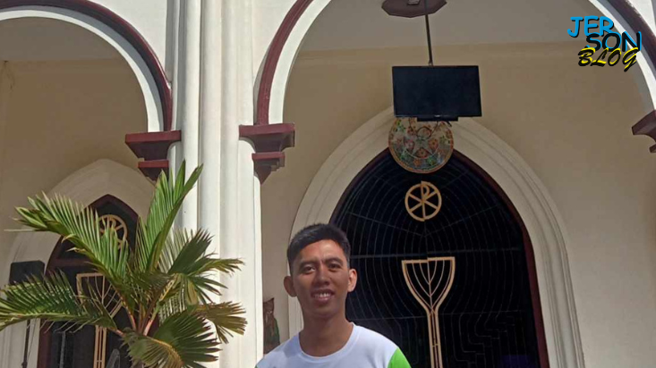

CORDOVA TOURIST SPOTS
1. 10k roses (10,000 roses)
Although the flowers at Cebu's 10,000 Roses Cafe are not genuine, they are nevertheless beautiful. However, if you are staying in Cebu City or Mandaue, the distance may be daunting. Fortunately, the Cebu-Cordova Link Expressway, which connects Mactan to the rest of Cebu, makes traveling here very easy and more convenient. It is owned by Miguel Cho, an interior designer. He was inspired by the famous Dongdaenum Design Plaza in South Korea.The entrance here is 20 pesos for non-locals and free for local citizens of cordova.

CORDOVA TOURIST SPOTS
2. Centennial Road (Roro Port)
Cordova Centennial Road is a four-lane road that links Barangay Alegria to the Rio Port of Cordova.It is a port that has a boat traveling to Jetape, Bohol, and it is also one of the bus routes that pass through CCLEX. It has a waiting shed and a wide road that can pass many vehicles. It also has a restaurant they call Roro. It is called Roro because it is named after the port. You can only pass it because it is just on the side of the road.


CORDOVA TOURIST SPOTS
3. Entoy's (Bakasihan)
One of the Tourist attraction here in Cordova is the Entoy's Bakasihan it is located at the end part of Buagsong Cordova, Cebu. It is right next to the sea so we can say that what they serve here is fresh, besides this their food is delicious. One of their most popular dishes here is Nilarang na Bakasi or (Eel fish stew) because of its sweet and slightly spicy taste and the broth is thick.
CORDOVA TOURIST SPOTS
4. Miracle Art Museum
The Cebu Happy World Museum Miracle Art is Cordova's modern museum it is located in Alegria Cordova, Cebu next to the road to Cordova Public College. The design of this museum is like a castle in the other country, it was a bulding that is most likely carved for attraction. There are also restaurants outside the museum where other visitors eat here before or after going inside and out of the museum.

CORDOVA HISTORICAL SITES
1. Cordova Old Municipal Hall
The old Cordova Municipal Hall is converted into a mini museum it is one of Cordova's Tourist spots at the same time it also has history. As of today, the new municipal hall is widened and has a lot more building than before.

ENVIRONMENT
1. Cordova Roro Port
While we are crossing the road to roro port we've seen a lot of boats and it has a great view.
2. Cordova Centennial Road
Going to Cordova Centennial Road we've seen a great view and those restaurants along the road.
3. Cordova-Cebu Link Expressway
The 8.9kilometers bridge at it's finest seeing the view of the bridge and the cebu city buildings.
4. Day-as Road to CCLEX
Passing through the road of Day-as Cordova, Cebu to go to 10,000 ROSES to see the CCLEX bridge.
CORDOVA HISTORICAL SITES
3. San Roque Parish Church
The San Roque Parish Church is Cordova's main historical sites as it was build for more than a centinnial year. Base on my research that it was built on May 22,1863 under Fr. Jose Salazar the first Parish Priest that time. It was designated to patron San Roque who was known for his kindness to his fellow people and animals having a dog pet as his friend.
2. Cordova-Cebu Link Expressway
Cordova-Cebu Link Expressway is one of Cordova's Historical sites here in Cordova Cebu as it was set to be one of the longest bridge here in Cebu city as it was almost 9 kilometers as it connected the Cordova and Cebu City. It was so convenient for those who wants to travel Cebu South and takes shorter route than we used to.